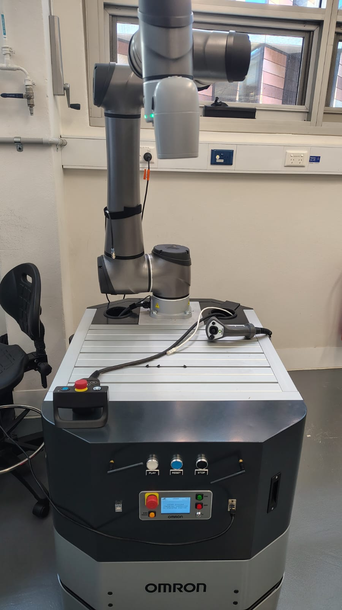
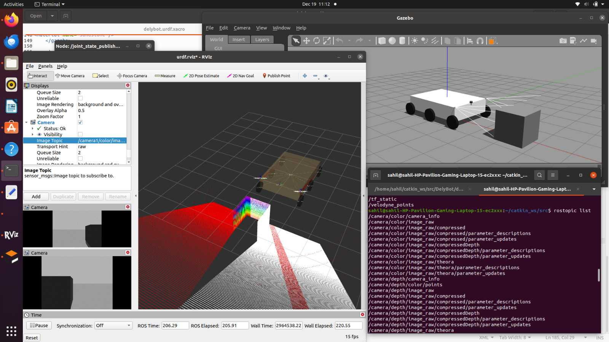
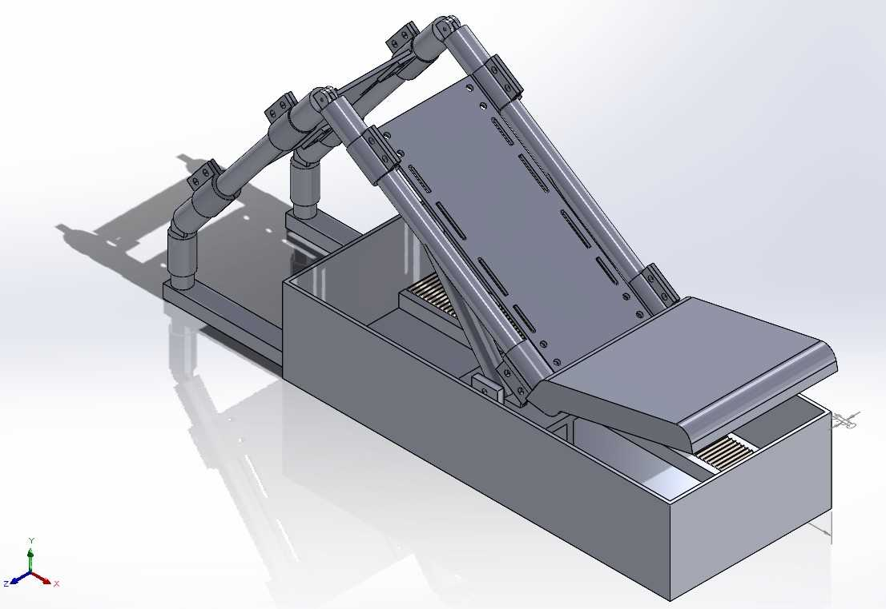
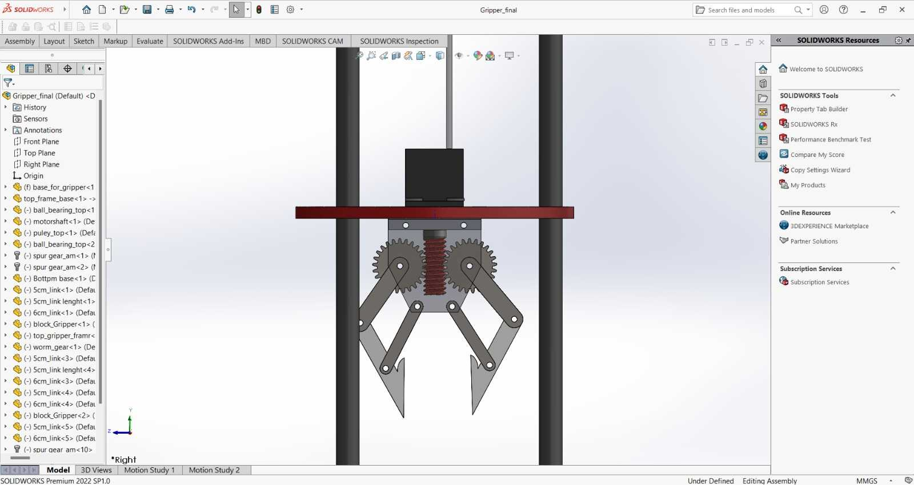
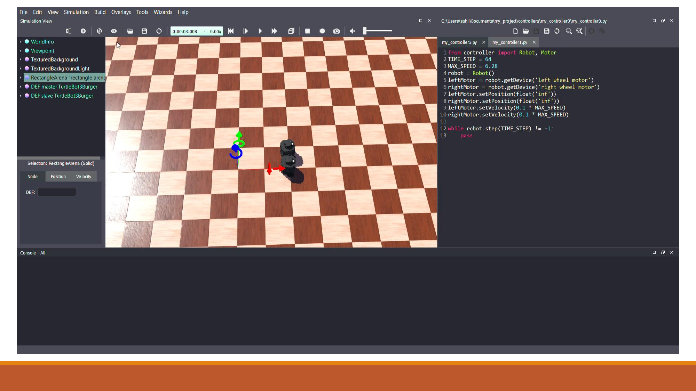
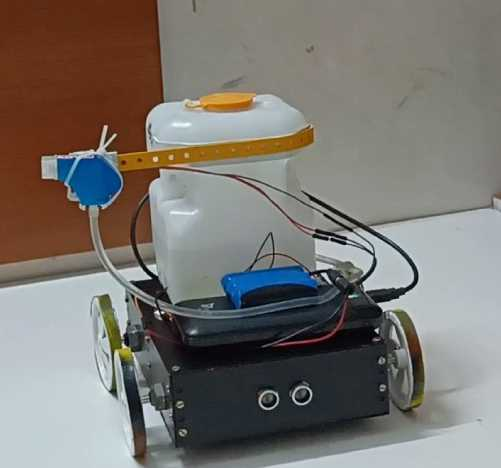
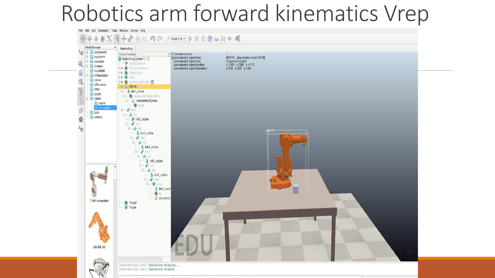

Master of Engineering Science — Robotics
University of New South Wales, Sydney, Australia
2024 – 2026
Focus areas: robotics, autonomous systems, ROS, navigation and manipulation.
UNSW Robotics Master’s Student
Robotics, autonomous systems, ROS 2, navigation, manipulation and AI-powered robot design.
About
I am a robotics engineering student currently working on ROS 2 integration and control of the Omron MoMa mobile manipulator. My work focuses on converting robot data into ROS-compatible interfaces, sensor integration, SLAM, navigation and manipulation workflows.
I have hands-on experience across ROS 1/2, Nav2, SLAM Toolbox, TF2, RViz, ARCL, Webots, V-REP, SolidWorks, ANSYS, Python, C++ and TensorFlow-based AI models.
Education
University of New South Wales, Sydney, Australia
2024 – 2026
Focus areas: robotics, autonomous systems, ROS, navigation and manipulation.
Hindustan Institute of Technology and Science, Chennai, India
2020 – 2024
Foundation in mechanical design, electronics, control systems, CAD and robotics.
Selected Projects

Current research project
Integrating the Omron LD-250 mobile base and TM12-S arm with ROS 2 for autonomous navigation and manipulation.

Project 01
Move Base with DWA, custom A* path planning, SLAM-based mapping, obstacle detection and Gazebo/RViz validation.

Project 02
AI-augmented physiotherapy robot with 2-DOF arc motion, CAD design, FEA validation and CNN-based knee condition detection.

Project 03
Soft-gripper rescue mechanism designed for safe extraction, rapid deployment and affordability using CAD and embedded systems.

Project 04
Leader-follower TurtleBot3 simulation in Webots with inter-robot communication through a centralized network.

Project 05
COVID-era prototype using ultrasonic obstacle avoidance, IR-triggered spraying and Tinkercad circuit validation.

Additional
Forward kinematics simulation in V-REP/CoppeliaSim and MoveIt-based manipulator motion planning experiments.
Technical Profile
ROS 1/2, Nav2, SLAM Toolbox, TF2, RViz, URDF, ARCL, Webots, V-REP
C/C++, Python, MATLAB, Embedded C, Linux, Git/GitHub, VS Code
TensorFlow, CNN, ANN, Deep Learning, OpenCV, OCR and image processing
SolidWorks, ANSYS, Fusion 360, Simulink, Gazebo and Unity AR/VR
Experience
Dec 2023 – May 2024
Worked on UGV systems, airport tugs and defense-related robotics. Developed URDF sensor integration, path-planning algorithms, CAD components and ROS-based system integration.
Jun 2022 – Jul 2022
Built foundations in ROS, CAD, AI/ML and embedded systems through TurtleBot teleoperation, Linux commands, AutoCAD and Tinkercad-based projects.
Research & Recognition
Published a paper in AIP Conference Proceedings and presented work at RIACT 2022, RANE 2023 and AIIMS-3.0. Also completed training in SMC pneumatics, TensorFlow, ROS, AI/ML/Python and MATLAB Simulink Onramp.
Contact
Open to robotics internships, research collaborations and autonomous systems projects.